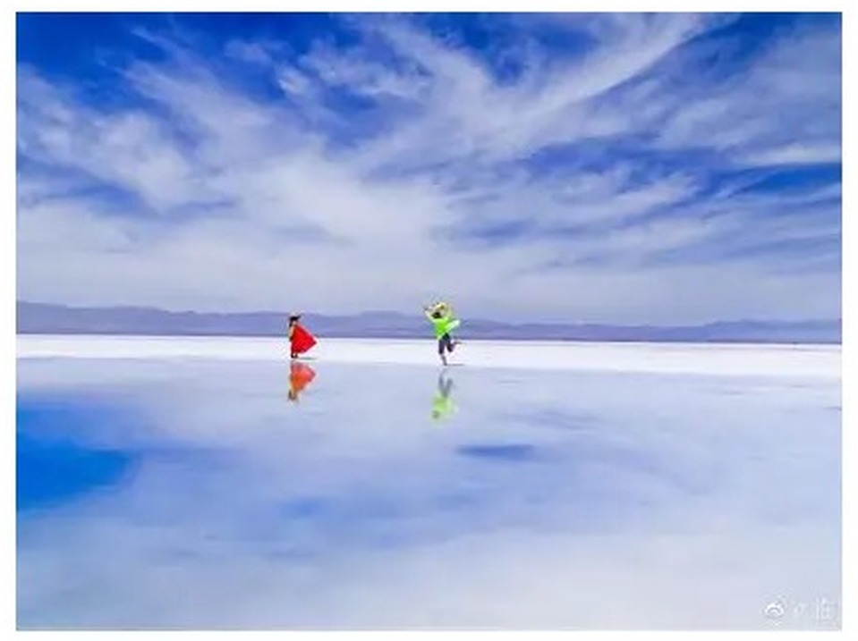
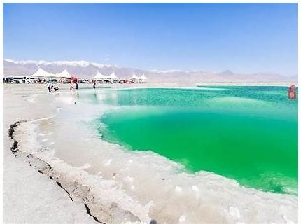
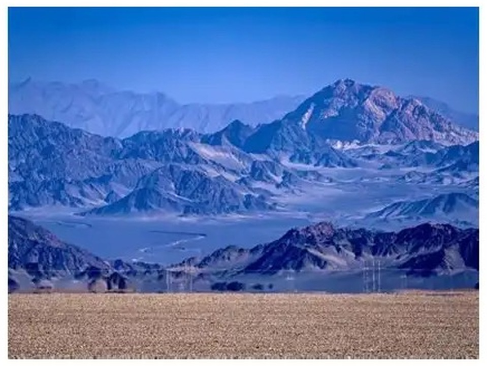
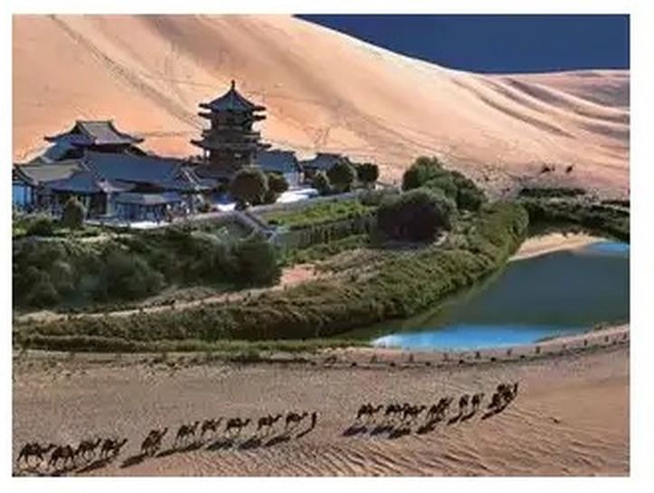
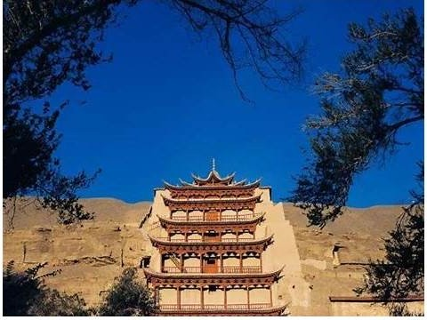
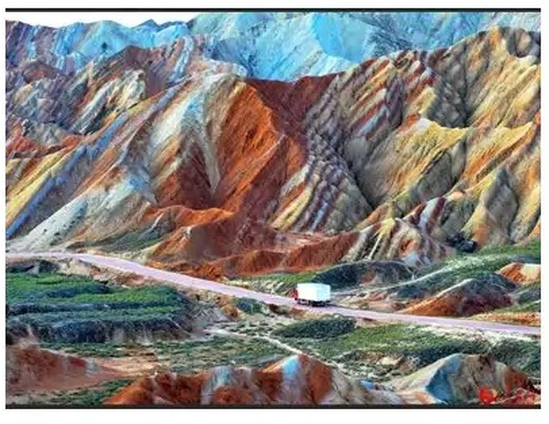
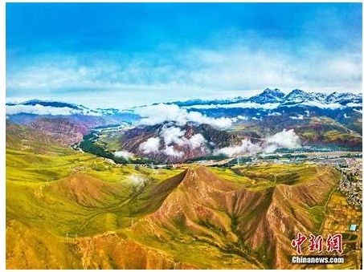
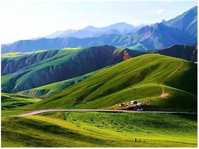
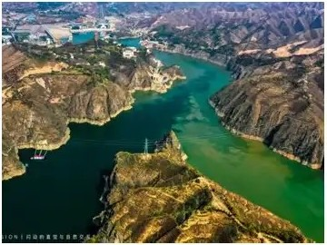

方案 A 西宁收官 · 塔尔寺晨光 + 青海湖补拍
- 塔尔寺拍摄光线最优：晨光窗（08:42 日出后 1h 内金顶侧光）
- 保留 10.4 青海湖北岸补拍窗：达坂山返程可顺路停刚察/断崖
- 西宁三晚不换酒店，行李不动，收官松弛
- 还车西宁无异地费，流程干净
- 10.5 整日可选：东关清真大寺、青藏高原动物园、省博
- 10.6 Z22 西宁过路车，软卧票源紧张（9.21 开抢）
- 10.7 到京，次日即工作日，无缓冲
- 放弃刘家峡黄洮交汇（西北水摄头牌）
- 兰州黄河夜景、牛肉面深度体验缺失
方案 B 兰州黄洮交汇 · 塔尔寺晨光保留
- 塔尔寺晨光保留：10.4 上午 08:30 前金顶侧光，未降级为平光
- 新增黄洮交汇：黄河与洮河双色分界线，西北水摄头牌
- 中山桥黄河夜景 + 白塔山日落：金城标志性光影
- 10.5 国庆返程峰值已过，三车次可选，抢票窗口更宽
- 兰州牛肉面、正宁路夜市收尾，城市烟火气
- 放弃 10.4 青海湖补拍窗（天气保险消失）
- 西宁取兰州还：异地还车费 ¥500–1000（待确认租车行）
- 多一次换酒店（西宁→兰州），多 160km 动车+租车衔接
- 10.5 当日行程较紧：黄洮交汇 → 返兰州 → 赶火车
西宁 → 黑马河 · 落地直发
斜光窗MU2428 落地即环线
12:00 大兴起飞 → 14:25 落地曹家堡 → 取行李 ~15:00 → 机场提车 → G109 直发黑马河。中秋满月序列首日（照度 96%），银河不可行，但可规划月出大片。
黑马河 · 青海湖日出
晨光窗 点击查看大图
点击查看大图
黑马河日出
青海湖最佳日出观赏地，湖面与天际线无遮挡。中秋后满月序列期间（9.26–9.28 照度 96–100%），银河不可行，但可规划月出大片。
茶卡盐湖 · 天空之镜
平光槽 → 斜光窗
点击查看大图茶卡盐湖 · 天空之镜
正午前低角度光线才能拍出湖面完整倒影。建议上午 09:00–11:00 入园，避开正午顶光。小火车深入湖心， barefoot 下水需备鞋套。
大柴旦 · 翡翠湖
斜光窗
点击查看大图大柴旦翡翠湖
工业盐池遗落的调色盘：碧绿、湛蓝、琥珀色块镶嵌在黑褐色盐壳中。无人机俯拍最佳；日落前 1h 侧光让色块边界更锐。
黑独山 · 冷湖日落
斜光窗 + 月出
点击查看大图黑独山 · 水墨月球
黑戈壁与灰白山脊构成的极简水墨场景。日落前侧光打出山脊层次；9.29 月出约 20:10（照度 90%），可拍「月升黑独山」冷暖对比。
敦煌 · 鸣沙山月牙泉 & 莫高窟 & 又见敦煌
斜光窗 / 室内 / 夜场
点击查看大图鸣沙山月牙泉
9.29 下午抵敦煌休整，16:30 前入园日落首刷：暖光打亮沙丘脊线，蓝调时刻月牙泉亮灯，月出 20:40 沙丘挂月。9.30 早 07:40 同票刷脸二刷拍日出剪影。一票 3 天多次入园，走西门人少。

点击查看大图莫高窟 · 九层楼
A 类票已订 9.30 15:00 场：两场数字电影 + 8 个洞窟约 3 小时，≈18:00 出窟后快速晚餐，赶 20:00《又见敦煌》（全员最高优先）。窟内禁拍，窟外九层楼与宕泉河床可拍。
嘉峪关 · 天下第一雄关
平光槽嘉峪关关城
明长城西端起点，河西走廊咽喉。城楼、瓮城、罗城三重防御体系完整保存。室内展陈不受光线影响，适合国庆首日平光槽填充。门票 110 元，建议 2–3 小时。
张掖 · 七彩丹霞深度游
晨光窗 · 必抢早场
点击查看大图七彩丹霞深度游 · 卧虎峡
深度游 368 元/人，6:30 最早场次入园。晨光侧光让彩丘纹理最锐，卧虎峡等特级保护区仅在深度游开放。西门服务大厅办理。
祁连 → 达坂山 → 西宁还车
斜光窗 · 还车日
点击查看大图达坂山 · 门源秋景
G227 国道翻越达坂山，秋季草原金黄、云杉墨绿、雪山白顶三层色彩。垭口海拔 3792m，注意高反与侧风。午后抵达西宁，15:30 还车（租车 8 天）。

点击查看大图卓尔山 · 东方小瑞士
若 10.2 星空拍摄收工晚，10.3 上午可补拍卓尔山晨光后再出发。山顶烽火台可俯瞰牛心山与祁连县城。
返程分支 · A 西宁收官 / B 兰州黄洮
决策节点 点击查看大图
点击查看大图
方案 A：塔尔寺晨光 + 西宁收官
10.5 清晨 08:42 日出后直奔塔尔寺，晨光打在八宝如意塔金顶。殿内酥油花、堆绣不受光线影响，外景晨光不可复制。10.4 为天气补漏/休整日。
点击查看大图
方案 B：塔尔寺晨光 → 当日赴兰州
10.4 上午 08:30 前塔尔寺晨光金顶 → 午后动车西宁→兰州（约 1h15m，¥58）→ 傍晚中山桥黄河夜景 + 白塔山日落 → 正宁路夜市收尾。

点击查看大图方案 B：次日黄洮交汇清晨侧光
10.5 清晨从兰州出发 80km，09:00 前到刘家峡观景台。黄河清、洮河浊，倒 Y 交汇分界线在侧光下对比最锐。午后返兰州，赶 T176 15:04 / Z22 16:29 / Z56 21:18 返京。